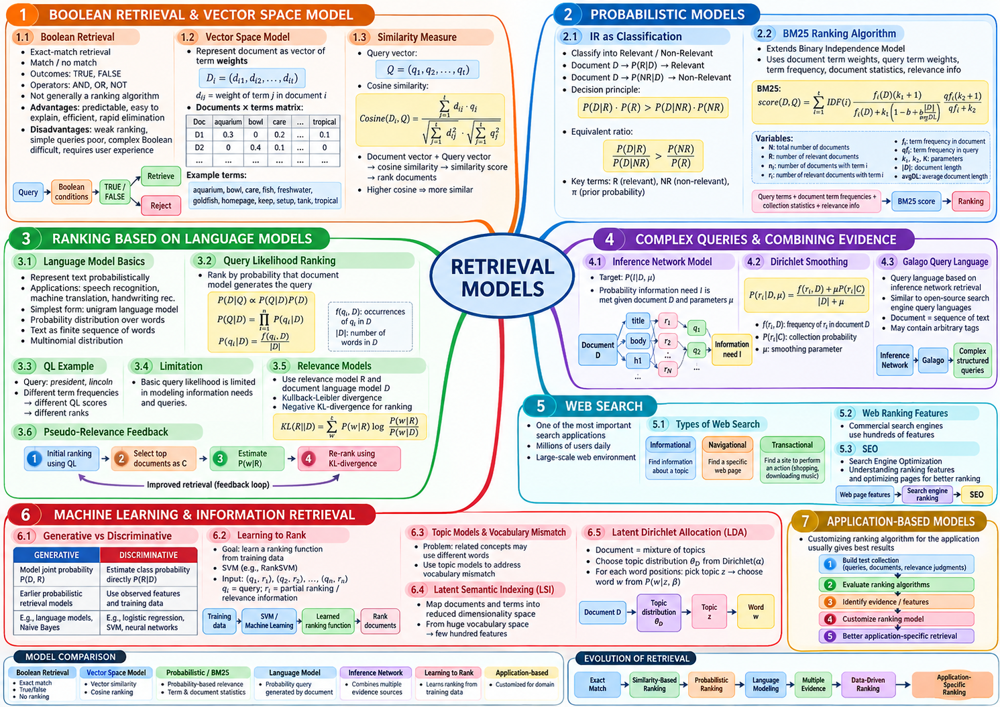

Tài liệu gốc: Slide bài giảng SEG301m Chương 7, "Retrieval Models" (25 slide)
Cách đọc: Mô hình truy xuất là tư duy cốt lõi quyết định "tài liệu nào xứng đáng được xếp lên đầu". Thay vì ghi nhớ công thức máy móc, hãy so sánh cách mỗi mô hình biểu diễn tài liệu và truy vấn, các giả định ngầm định, và cách diễn giải điểm số. Điểm số giữa các mô hình khác nhau không nằm trên cùng thang đo, do đó không thể so sánh số học trực tiếp với nhau.
Mục tiêu của chương
Sau khi học xong chương này, bạn có thể giải thích và tính toán các nội dung sau:
- Phân biệt sự khác nhau giữa tìm kiếm Boolean và truy xuất có xếp hạng (ranked retrieval).
- Xây dựng vector tài liệu và truy vấn từ tf, df, idf và tính toán độ tương đồng cosine (cosine similarity).
- Trình bày tư duy xác suất và tính điểm cho hai tài liệu theo công thức BM25 trong slide bài giảng.
- Giải thích hàm hợp lý của truy vấn (query likelihood), vấn đề xác suất bằng 0, làm mượt Dirichlet và điểm số logarit.
- Nêu rõ vai trò của mạng suy luận (inference network), tìm kiếm Web, học xếp hạng (Learning to Rank), mô hình chủ đề (topic model) và mô hình theo ứng dụng.
SLIDE NGUỒN 1-3

Kiến thức cần chuẩn bị
- Vận dụng danh sách posting, tf, df, độ dài tài liệu và vị trí từ Chương 5.
- Khoảng cách giữa nhu cầu thông tin và câu truy vấn từ Chương 6 vẫn tồn tại trong mọi mô hình tìm kiếm.
- Khi thay đổi cơ số logarit, giá trị điểm số tuyệt đối sẽ thay đổi, nhưng thứ tự xếp hạng giữa các tài liệu không đổi (vì chỉ là nhân với hằng số dương).
- Điểm số xếp hạng cao không đồng nghĩa với xác suất liên quan đã được chuẩn hóa.
Vị trí trong hệ thống tìm kiếm
Biểu diễn truy vấn + Biểu diễn tài liệu + Thống kê bộ sưu tập
↓
Mô hình truy xuất (Retrieval Model)
↓
Khớp hoặc Điểm số (Score)
↓
Xếp hạng (Ranking)
Ở Chương 5, khâu xử lý truy vấn giải quyết bài toán tính toán hiệu năng (làm sao để duyệt nhanh); còn Chương 7 này định nghĩa bản chất công thức toán học tính điểm.
Bộ sưu tập tài liệu nhỏ dùng chung
Trong mô hình Boolean và mô hình Không gian vector, chúng ta dùng chung 4 tài liệu sau (bỏ qua vị trí từ):
| ID | Chuỗi token |
|---|---|
| D1 | tropical fish |
| D2 | fish tank |
| D3 | tropical aquarium |
| D4 | aquarium guide |
Tần số tài liệu df: tropical = 2, fish = 2, aquarium = 2, tank = 1, guide = 1.
7.1 Tìm kiếm Boolean và Mô hình không gian vector
SLIDE NGUỒN 4-8
Tìm kiếm Boolean (Boolean Retrieval)
Tìm kiếm Boolean đánh giá tài liệu dựa trên các phép toán logic ĐÚNG / SAI (TRUE / FALSE):
| Truy vấn | Phép toán tập hợp | Kết quả trả về |
|---|---|---|
tropical AND fish |
{D1, D3} ∩ {D1, D2} |
{D1} |
tropical OR fish |
{D1, D3} ∪ {D1, D2} |
{D1, D2, D3} |
fish AND NOT aquarium |
{D1, D2} ∩ (Toàn bộ − {D3, D4}) |
{D1, D2} |
Mô hình Boolean cơ bản không tự động xếp thứ hạng giữa các tài liệu thỏa mãn điều kiện. Kết quả rất rõ ràng và dễ giải thích, nhưng đòi hỏi người dùng phải nắm vững cú pháp logic. Với truy vấn đơn giản, kết quả dễ rơi vào tình trạng quá nhiều hoặc không có kết quả nào (0 kết quả).
Toán tử NOT lấy phần bù trên chính bộ sưu tập tài liệu đang xét. Khi có dấu ngoặc đơn, thứ tự ưu tiên thực hiện từ trong ra ngoài.
Xếp hạng theo tính gần kề (Proximity ranking)
Dựa trên chỉ mục vị trí ở Chương 5, hệ thống có thể cộng thêm điểm thưởng (bonus) nếu các từ truy vấn xuất hiện sát cạnh nhau trong tài liệu.
Xác định các trục trong Không gian vector
Mô hình không gian vector (vector space model) coi mỗi từ vựng là một trục tọa độ độc lập. Với 5 từ vựng tropical, fish, aquarium, tank, guide, mỗi tài liệu trở thành một điểm tọa độ trong không gian 5 chiều:
Trọng số d_ij của từ j trong tài liệu i được tính bằng tích giữa tần số từ thô (raw tf) và nghịch đảo tần số tài liệu (idf):
Với tổng số tài liệu N = 4:
- Các từ có
df = 2nhậnidf = ln(4 / 2) = ln(2) ≈ 0.693. - Các từ có
df = 1nhậnidf = ln(4 / 1) = ln(4) ≈ 1.386.
Tọa độ vector của truy vấn và 4 tài liệu:
| Vector | tropical | fish | aquarium | tank | guide |
|---|---|---|---|---|---|
Q = tropical fish |
0.693 | 0.693 | 0 | 0 | 0 |
| D1 | 0.693 | 0.693 | 0 | 0 | 0 |
| D2 | 0 | 0.693 | 0 | 1.386 | 0 |
| D3 | 0.693 | 0 | 0.693 | 0 | 0 |
| D4 | 0 | 0 | 0.693 | 0 | 1.386 |
Tính toán độ tương đồng Cosine (Cosine Similarity)
Độ tương đồng cosine đo góc hợp bởi giữa hai vector; góc càng hẹp thì giá trị cosine càng lớn (gần 1):
Tử số là tích vô hướng, mẫu số là tích độ dài của hai vector. Độ dài vector truy vấn |Q| = √(0.693² + 0.693²) ≈ 0.980:
| Tài liệu | Tích vô hướng với Q | Độ dài vector |D| | Điểm Cosine |
|---|---|---|---|
| D1 | 0.693² + 0.693² = 0.961 |
0.980 | 1.000 |
| D2 | 0.693² = 0.480 |
√(0.693² + 1.386²) ≈ 1.550 |
0.316 |
| D3 | 0.693² = 0.480 |
0.980 | 0.500 |
| D4 | 0 | 1.550 | 0.000 |
Thứ tự xếp hạng: D1 (1.000) > D3 (0.500) > D2 (0.316) > D4 (0.000).
Xem đáp án gợi ý
Vì từ thứ hai trong D2 là tank có idf rất lớn (1.386), kéo vector D2 lệch mạnh về trục tank xa khỏi vector truy vấn. Trong khi đó, từ thứ hai của D3 là aquarium có idf nhỏ hơn (0.693), giúp góc giữa vector D3 và vector truy vấn hẹp hơn góc của D2.
7.2 Truy xuất xác suất và mô hình BM25
SLIDE NGUỒN 9-10
Xem bài toán IR như bài toán phân loại nhị phân
Mô hình xác suất so sánh xem tài liệu D có xác suất thuộc lớp liên quan R (Relevant) cao hơn hay thuộc lớp không liên quan NR (Non-Relevant) cao hơn:
Mô hình độc lập nhị phân (Binary Independence Model - BIM) giả định sự xuất hiện của các từ là độc lập có điều kiện theo lớp. Giả định này đơn giản hóa tính toán nhưng bỏ qua mối liên hệ thực tế giữa các từ như tropical và fish.
Công thức BM25 trong slide bài giảng
Slide 10 kết hợp trọng số lý thuyết thông tin Robertson–Spärck Jones (RSJ) với tần số từ trong tài liệu và tần số từ trong truy vấn:
N: tổng số tài liệu trong bộ sưu tập.n_i: số tài liệu chứa từi(chính là df).R: số lượng tài liệu đã biết là có liên quan.r_i: số tài liệu liên quan có chứa từi.f_i: tần số xuất hiện của từitrong tài liệu đang xét (tf).qf_i: tần số xuất hiện của từitrong câu truy vấn.k1: tham số điều chỉnh tốc độ bão hòa của tf tài liệu (thường đặt từ 1.2 đến 2.0).k2: tham số điều chỉnh độ bão hòa của tf truy vấn.K: hệ số chuẩn hóa theo độ dài tài liệu:
Tham số b ∈ [0, 1] kiểm soát mức độ phạt tài liệu dài: b = 0 nghĩa là không phạt độ dài, b = 1 phạt mạnh nhất.
Khi không có thông tin phản hồi liên quan trước (R = r_i = 0), thành phần idf rút gọn về dạng:
Dạng thức RSJ nguyên bản này có thể nhận giá trị âm nếu từ xuất hiện ở hơn một nửa số tài liệu (n_i > N / 2).
Tính toán BM25 trên hai tài liệu
Số liệu giả định: Xét kho 8 tài liệu (N = 8), truy vấn tropical fish (qf = 1). Tham số: k1 = 1.2, b = 0.75, avgdl = 10, k2 = 1000 (khi đó thành phần truy vấn xấp xỉ bằng 1):
| Thống kê từ | tropical | fish |
|---|---|---|
df (n_i) |
2 | 3 |
| RSJ IDF | ln(6.5 / 2.5) ≈ 0.956 |
ln(5.5 / 3.5) ≈ 0.452 |
Hai tài liệu ứng viên:
| Tài liệu | Độ dài |D| | tf(tropical) | tf(fish) | Hệ số K |
|---|---|---|---|---|
| D1 | 6 | 1 | 2 | 1.2(0.25 + 0.75 × 0.6) = 0.84 |
| D2 | 14 | 2 | 1 | 1.2(0.25 + 0.75 × 1.4) = 1.56 |
Điểm số tài liệu D1:
- tf factor của
tropical:(2.2 × 1) / (0.84 + 1) ≈ 1.196 - tf factor của
fish:(2.2 × 2) / (0.84 + 2) ≈ 1.549 score(D1) = 0.956 × 1.196 + 0.452 × 1.549 ≈ 1.142 + 0.700 = 1.843
- tf factor của
Điểm số tài liệu D2:
- tf factor của
tropical:(2.2 × 2) / (1.56 + 2) ≈ 1.236 - tf factor của
fish:(2.2 × 1) / (1.56 + 1) ≈ 0.859 score(D2) = 0.956 × 1.236 + 0.452 × 0.859 ≈ 1.181 + 0.388 = 1.569
- tf factor của
Tài liệu D1 đạt điểm cao hơn D2 (1.843 > 1.569). Dù D2 có tần số tropical gấp đôi D1, thành phần tf bị bão hòa và độ dài của D2 dài hơn mức trung bình (14 > 10) khiến điểm số của D2 bị kìm hãm lại.
Xem đáp án gợi ý
Vì thành phần tf trong BM25 có dạng bão hòa (k1 + 1)f / (K + f). Khi f tăng lên, mẫu số cũng tăng theo, làm cho độ dốc tăng trưởng giảm dần. Cơ chế này ngăn chặn việc nhồi nhét một từ khóa quá nhiều lần để tăng điểm vô hạn.
7.3 Mô hình ngôn ngữ và Hàm hợp lý truy vấn
SLIDE NGUỒN 11-15
Xem tài liệu như nguồn sinh ra từ ngữ
Mô hình ngôn ngữ unigram (unigram language model) coi mỗi tài liệu như một phân phối xác suất sinh ra các từ. Phương pháp hàm hợp lý của truy vấn (query likelihood) tính xác suất để mô hình ngôn ngữ của tài liệu sinh ra đúng câu truy vấn của người dùng:
Theo định lý Bayes, xác suất hậu nghiệm P(D|Q) ∝ P(Q|D)P(D). Nếu giả định xác suất tiên nghiệm của mọi tài liệu P(D) đều bằng nhau thì thứ bậc của P(D|Q) trùng khớp với thứ bậc của hàm hợp lý P(Q|D).
Vấn đề xác suất bằng 0 (Zero-probability Problem)
Nếu tài liệu thiếu dù chỉ 1 từ trong câu truy vấn, P(q_i | D) = 0, kéo theo tích xác suất của toàn bộ câu truy vấn bằng 0: P(Q | D) = 0. Điều này làm mất đi khả năng phân biệt thứ tự giữa các tài liệu khớp được 4 trên 5 từ với tài liệu không khớp từ nào.
Kỹ thuật làm mượt Dirichlet (Dirichlet Smoothing)
Làm mượt Dirichlet phân bổ một phần xác suất từ mô hình ngôn ngữ chung của toàn bộ sưu tập cho các từ không xuất hiện trong tài liệu:
f_w,D: số lần từwxuất hiện trong tài liệuD.P(w|C): xác suất xuất hiện của từwtrong toàn bộ bộ sưu tập.μ > 0: tham số Dirichlet đóng vai trò như số lượng từ giả định mượn từ bộ sưu tập.
Ví dụ tính toán: 4 tài liệu có tổng cộng 13 token, tần suất bộ sưu tập: tropical = 2/13, fish = 4/13, đặt μ = 4:
| Tài liệu | Chuỗi token | P(tropical | D, μ) | P(fish | D, μ) | Tích xác suất | Điểm logarit ln |
|---|---|---|---|---|---|
| D1 | tropical fish fish |
0.2308 | 0.4615 | 0.1065 | -2.240 |
| D2 | fish tank tank tank |
0.0769 | 0.2788 | 0.0214 | -3.842 |
| D3 | tropical aquarium guide |
0.2308 | 0.1758 | 0.0406 | -3.205 |
| D4 | aquarium fish guide |
0.0879 | 0.3187 | 0.0280 | -3.575 |
Với tài liệu D2 hoàn toàn không chứa từ tropical, nhờ làm mượt, xác suất vẫn đạt (0 + 4 × 2/13) / (4 + 4) ≈ 0.0769 thay vì bằng 0. Thứ tự xếp hạng: D1 > D3 > D4 > D2.
Trong thực tế, người ta luôn tính tổng logarit Σ log P(q_i | D) để tránh tràn số dưới khi nhân nhiều xác suất nhỏ.
Mô hình độ liên quan và Phân kỳ Kullback–Leibler (KL Divergence)
Slide 14-15 giới thiệu hướng tiếp cận nâng cao: ước lượng mô hình độ liên quan (relevance model) R từ các tài liệu hàng đầu, sau đó đo khoảng cách phân kỳ KL giữa mô hình R và mô hình tài liệu D:
Vì phân kỳ KL càng nhỏ nghĩa là tài liệu càng gần với mô hình liên quan, ta tối đa hóa giá trị âm -KL(R || D). Sau khi triệt tiêu thành phần hằng số không phụ thuộc vào tài liệu, điểm số xếp hạng rút gọn thành:
Cực tiểu hóa phân kỳ KL hoàn toàn tương đương với việc cực đại hóa điểm số tích logarit trên.
7.4 Truy vấn phức tạp và Mạng suy luận (Inference Networks)
SLIDE NGUỒN 16-18
Mạng suy luận (inference network) kết nối các tài liệu, các trường văn bản, đặc trưng từ vựng và toán tử truy vấn thành một đồ thị mạng Bayesian để truyền dẫn bằng chứng:
Tài liệu D
├─ Mô hình trường title θ_title ─ Đặc trưng r1, r2 ...
├─ Mô hình trường body θ_body ─ Đặc trưng r1, r2 ...
└─ Mô hình trường h1 θ_h1 ─ Đặc trưng r1, r2 ...
↓
Toán tử truy vấn q1, q2
↓
Nhu cầu thông tin I
- Nút tài liệu D: Tài liệu ứng viên đang được đánh giá.
- Nút trường (Field nodes): Mô hình ngôn ngữ riêng cho từng vùng cấu trúc như title, body, heading.
- Nút đặc trưng (Feature nodes
r_i): Các bằng chứng cụ thể trích xuất từ văn bản (từ đơn, cụm từ có thứ tự, đồng xuất hiện trong cửa sổ). - Nút toán tử truy vấn (
q_i): Các toán tử biểu diễn điều kiện tìm kiếm (như#od:1,#combine). - Nút nhu cầu thông tin (Information need
I): Nút đỉnh cao nhất tổng hợp toàn bộ bằng chứng thành điểm số thỏa mãn nhu cầu thông tin. - Cạnh liên kết (Edges): Thể hiện sự phụ thuộc suy luận xác suất giữa các tầng, không phải là siêu liên kết hyperlink trên Web.
Công thức tính xác suất đặc trưng được làm mượt bằng Dirichlet:
Cú pháp truy vấn dạng cây của Galago biểu diễn các điều kiện tìm kiếm phức tạp:
#combine(
#od:1(tropical fish)
#od:1(aquarium fish)
fish
)
Toán tử #od:1 yêu cầu hai từ phải xuất hiện liền kề đúng thứ tự (ordered distance 1), còn toán tử #combine kết hợp trọng số các nhánh bằng chứng.
7.5 Tìm kiếm Web
SLIDE NGUỒN 19-20
Tìm kiếm Web phải đối mặt với dữ liệu quy mô khổng lồ, chất lượng không đồng đều, hành vi spam tinh vi và sự đa dạng về ý định người dùng (search intent):
| Ý định tìm kiếm | Mục tiêu của người dùng | Ví dụ truy vấn |
|---|---|---|
| Tìm kiếm thông tin (Informational) | Tìm hiểu kiến thức về một chủ đề | cong thuc tinh bm25 |
| Tìm kiếm điều hướng (Navigational) | Đi thẳng tới một trang web hoặc cổng thông tin cụ thể | cong thong tin sinh vien fpt |
| Tìm kiếm giao dịch (Transactional) | Thực hiện hành động như mua sắm, tải tệp, đăng ký | mua laptop sinh vien mong nhe |
Mỗi ý định đòi hỏi loại trang đích và tiêu chí xếp hạng khác nhau.
Các công cụ tìm kiếm Web thương mại kết hợp hàng trăm đặc trưng: nội dung văn bản, văn bản neo, độ mới, vị trí địa lý, độ uy tín PageRank và tín hiệu tương tác người dùng. Độ phổ biến (popularity) phản ánh mức độ quan tâm của cộng đồng, nhưng không đồng nhất với độ liên quan: một trang chủ nổi tiếng không thể thay thế cho một bài viết giải thích chi tiết đúng trọng tâm câu hỏi.
7.6 Học máy, Học xếp hạng và Mô hình chủ đề
SLIDE NGUỒN 21-22
Mô hình tạo sinh (Generative) và Mô hình phân biệt (Discriminative)
- Mô hình tạo sinh (Generative model): Mô hình hóa cách dữ liệu hoặc câu truy vấn được sinh ra từ tài liệu (tiêu biểu như mô hình ngôn ngữ).
- Mô hình phân biệt (Discriminative model): Học trực tiếp hàm ánh xạ từ các vector đặc trưng quan sát được sang nhãn phân loại hoặc điểm số xếp hạng.
Trong Học xếp hạng (Learning to Rank - LTR), mỗi mẫu dữ liệu đầu vào là một bộ:
(Truy vấn q, Tài liệu D, Vector đặc trưng x, Nhãn độ liên quan y)
Vector đặc trưng x kết hợp điểm BM25, mức độ khớp tiêu đề, tính gần kề, điểm PageRank và độ mới.
Ví dụ tính điểm từ hàm học được: Giả sử mô hình đã học được bộ trọng số (0.6, 0.3, 0.1) cho ba đặc trưng đã chuẩn hóa BM25 = 0.8, khớp tiêu đề = 1.0, độ mới = 0.4:
score = 0.6 × 0.8 + 0.3 × 1.0 + 0.1 × 0.4 = 0.82
Ba hướng tiếp cận chính trong LTR:
- Pointwise: Dự đoán điểm số hoặc cấp độ liên quan cho từng tài liệu độc lập.
- Pairwise (như Ranking SVM): Học từ các cặp tài liệu
(D_A tốt hơn D_B), tìm vector trọng số sao cho điểm số của tài liệu tốt luôn cao hơn tài liệu kém. - Listwise: Tối ưu hóa trực tiếp các chỉ số đánh giá toàn bộ danh sách (như NDCG hay MAP).
Bất đồng từ vựng và Mô hình chủ đề (Topic Models)
Khi người dùng tìm kiếm từ car nhưng tài liệu chỉ chứa từ đồng nghĩa automobile, các mô hình so khớp từ bề mặt sẽ bỏ sót tài liệu.
- Chỉ mục ngữ nghĩa tiềm ẩn (Latent Semantic Indexing - LSI): Sử dụng phép phân rã ma trận đại số tuyến tính (SVD) để chiếu các từ và tài liệu vào một không gian tiềm ẩn số chiều thấp, đưa các từ đồng xuất hiện về gần nhau.
- Phân bổ Dirichlet tiềm ẩn (Latent Dirichlet Allocation - LDA): Mô hình xác suất tạo sinh giả định mỗi tài liệu là một phân phối hòa trộn của nhiều chủ đề (topics), và mỗi chủ đề là một phân phối xác suất sinh ra các từ vựng.
Ví dụ một bài báo về thiết bị thông minh có thể chứa 70% chủ đề công nghệ và 30% chủ đề thể thao:
| Chủ đề | AI | chip | ball | match | Tổng |
|---|---|---|---|---|---|
| Công nghệ | 0.40 | 0.35 | 0.05 | 0.20 | 1.00 |
| Thể thao | 0.05 | 0.05 | 0.45 | 0.45 | 1.00 |
Quy trình tạo sinh của LDA:
- Chọn phân phối chủ đề
θ_Dcho tài liệuD(ví dụ: Công nghệ 0.7, Thể thao 0.3). - Tại mỗi vị trí từ, chọn một chủ đề
ztheo tỉ lệθ_D. - Từ chủ đề
zđã chọn, sinh ra một từ ngữ cụ thểwtheo phân phối xác suất của chủ đề đó.
Trong khâu huấn luyện thực tế, hệ thống quan sát các từ xuất hiện trong văn bản để suy luận ngược lại phân phối chủ đề tiềm ẩn.
7.7 Mô hình theo ứng dụng (Application-based Models)
SLIDE NGUỒN 23
Mô hình theo ứng dụng điều chỉnh chiến lược tìm kiếm theo đặc thù của từng miền nghiệp vụ:
- Xây dựng bộ sưu tập kiểm thử đặc thù gồm các truy vấn, tài liệu và nhãn đánh giá thực tế của nghiệp vụ.
- Thiết lập mô hình đường cơ sở (baseline model).
- Bổ sung các đặc trưng chuyên biệt của miền ứng dụng.
- Đánh giá và so sánh định lượng trên cùng một tập kiểm thử độc lập.
Ví dụ trong tìm kiếm văn bản quy định của trường đại học, tính pháp lý, cơ quan ban hành, số hiệu văn bản và ngày có hiệu lực quan trọng hơn nhiều so với độ phổ biến thông thường.
So sánh các mô hình truy xuất
| Mô hình | Biểu diễn dữ liệu | Cơ chế quyết định / Điểm số | Ý nghĩa trực quan | Ưu điểm chính | Hạn chế và phạm vi áp dụng |
|---|---|---|---|---|---|
| Boolean | Tập hợp các từ | Logic AND/OR/NOT (ĐÚNG/SAI) | Thỏa mãn trọn vẹn điều kiện | Rõ ràng, dễ đoán, lọc chính xác | Không tự xếp hạng; dễ rơi vào 0 kết quả |
| Proximity | Vị trí offset của từ | Điểm thưởng khoảng cách và thứ tự | Các từ gần nhau có liên hệ mạnh | Rất hiệu quả cho tên riêng, cụm từ | Cần chỉ mục vị trí; tốn thêm quy tắc khoảng cách |
| Không gian vector | Vector trọng số tf-idf | Tích vô hướng / Cosine | Hướng vector càng gần thì càng giống | Hỗ trợ khớp từng phần và xếp hạng | Giả định các từ độc lập, phụ thuộc cách gán trọng số |
| Xác suất nhị phân | Vector nhị phân sự hiện diện | Tỉ số cơ may độ liên quan (Odds) | Xác suất thuộc về lớp tài liệu đúng | Nền tảng lý thuyết xác suất chặt chẽ | Giả định độc lập, cần dữ liệu ước lượng xác suất |
| BM25 | tf, df, độ dài tài liệu | Bão hòa tf × IDF × chuẩn hóa độ dài | Đánh giá từ hiếm với tần số hợp lý | Baseline cực mạnh cho văn bản | Cần tinh chỉnh tham số k1, b |
| Query likelihood | Phân phối ngôn ngữ tài liệu | Tích xác suất hoặc tổng logarit | Khả năng tài liệu sinh ra câu truy vấn | Lý thuyết tường minh, tích hợp làm mượt | Giả định unigram độc lập, cần kỹ thuật làm mượt |
| Mạng suy luận | Đồ thị nút đặc trưng và toán tử | Niềm tin tổng hợp (Belief score) | Cây kết hợp nhiều luồng bằng chứng | Biểu diễn được cấu trúc, cụm từ, trường | Thiết kế và giải thích hệ thống phức tạp |
| Học xếp hạng (LTR) | Vector đặc trưng truy vấn-tài liệu | Hàm xếp hạng học từ dữ liệu | Học cách kết hợp đặc trưng tối ưu | Kết hợp hàng trăm tín hiệu khác nhau | Cần tập dữ liệu huấn luyện lớn có gán nhãn |
| Mô hình chủ đề (LDA/LSI) | Không gian chủ đề số chiều thấp | Độ tương đồng trong không gian tiềm ẩn | Đồng xuất hiện cùng chủ đề tiềm ẩn | Khắc phục bất đồng từ vựng | Khó kiểm soát từ hiếm và khớp cụm từ chính xác |
| Theo ứng dụng | Đặc trưng chuyên biệt của miền | Tùy biến theo nghiệp vụ miền | Tối ưu riêng cho từng bài toán | Khai thác sâu tri thức nghiệp vụ | Chi phí bảo trì cao, khó tái sử dụng cho miền khác |
Lưu ý: Không thể lấy con số điểm của các mô hình khác nhau để so sánh trực tiếp độ lớn với nhau. Đánh giá mô hình phải dựa trên việc so sánh thứ bậc kết quả trên cùng một tập dữ liệu kiểm thử chuẩn.
Bài tập cuối chương
SLIDE NGUỒN 24
Bài tập 1: Thiết kế dự án kiểm thử theo chuẩn TREC
Thiết kế một bộ sưu tập kiểm thử truy xuất adhoc dựa trên dữ liệu Wikipedia:
- Xây dựng danh sách nhu cầu thông tin và chuyển hóa thành các câu truy vấn.
- Thiết lập quy trình đánh giá độ liên quan bằng phương pháp gộp kết quả (pooling) từ nhiều công cụ tìm kiếm khác nhau.
- Phân chia tập truy vấn thành tập phát triển (train/tuning) và tập kiểm thử độc lập (test).
Xem hướng dẫn giải
Mô tả rõ ràng nhu cầu thông tin trong một đoạn văn ngắn trước khi tóm tắt thành truy vấn ngắn. Áp dụng kỹ thuật pooling lấy top-K tài liệu hàng đầu từ ít nhất 3 mô hình khác nhau (ví dụ: Boolean, Không gian vector, BM25) để chuyên viên thẩm định nhãn liên quan. Các tài liệu nằm ngoài pool có thể tạm coi là không liên quan nhưng cần ghi chú rõ ràng về độ bao phủ của pool.
Bài tập 2: Lập trình kiểm thử mô hình BM25
Cài đặt công thức tính điểm BM25 trong slide và kiểm thử trên các trường hợp biên: từ không xuất hiện trong tài liệu (tf = 0), từ xuất hiện ở hơn một nửa số tài liệu (df > N / 2), tài liệu rất ngắn và tài liệu rất dài.
Xem hướng dẫn giải
Tách biệt các hàm tính IDF, thành phần tần số tài liệu và thành phần tần số truy vấn. Khi df > N / 2, công thức RSJ nguyên bản sẽ cho giá trị IDF âm, dẫn tới việc tài liệu chứa từ này bị trừ điểm. Cần ghi chú rõ hiện tượng này và so sánh với biến thể BM25 không âm (log(1 + ...)).
Bài tập 3: Cơ chế phát hiện trôi truy vấn trong phản hồi giả định
Xây dựng quy tắc phát hiện hiện tượng trôi truy vấn (query drift) khi tự động lấy thêm từ khóa từ top 3 tài liệu hàng đầu.
Xem đáp án gợi ý
Cảnh báo trôi truy vấn khi: (1) Tổng trọng số của các từ mở rộng mới vượt trội áp đảo hoàn toàn trọng số của các từ truy vấn gốc; (2) Các từ mới chỉ xuất hiện cục bộ trong đúng 1 tài liệu top đầu mà không được chia sẻ giữa các tài liệu trong top 3; (3) Kết quả tìm kiếm sau khi mở rộng không còn chứa bất kỳ tài liệu nào của danh sách top 3 ban đầu.
Tổng kết
SLIDE NGUỒN 25
- Tìm kiếm Boolean đánh giá điều kiện đúng/sai tuyệt đối và không tự động xếp thứ bậc trong dạng thức cơ bản.
- Mô hình không gian vector biểu diễn tài liệu và truy vấn dưới dạng vector trọng số tf-idf và đo độ gần góc bằng độ tương đồng cosine.
- Mô hình BM25 kết hợp hài hòa giữa idf, độ bão hòa tần số từ và sự chuẩn hóa theo độ dài tài liệu.
- Phương pháp hàm hợp lý truy vấn (Query likelihood) đo xác suất tài liệu sinh ra câu truy vấn, sử dụng làm mượt Dirichlet để khắc phục vấn đề xác suất bằng 0.
- Mạng suy luận (Inference network) kết hợp linh hoạt nhiều nguồn bằng chứng từ các trường dữ liệu và toán tử cấu trúc phức tạp.
- Học xếp hạng (LTR) sử dụng máy học để tự động tối ưu hóa việc kết hợp hàng trăm đặc trưng khác nhau từ dữ liệu nhãn liên quan.
- Mô hình chủ đề (LSI, LDA) giải quyết bài toán bất đồng từ vựng bằng cách khám phá không gian ngữ nghĩa tiềm ẩn.
Câu hỏi tự kiểm tra
- Vì sao nói mô hình Boolean cơ bản không phải là một mô hình truy xuất có xếp hạng (ranked retrieval)?
- Giải thích vì sao độ tương đồng cosine không phải là một xác suất.
- Trong công thức BM25 của slide, điều kiện nào sẽ khiến trọng số RSJ IDF nhận giá trị âm?
- Dưới giả định nào thì thứ bậc của hàm hợp lý truy vấn
P(Q|D)trùng khớp với thứ bậc của xác suất hậu nghiệmP(D|Q)? - Dữ liệu cần thiết ở giai đoạn huấn luyện (training) và giai đoạn suy luận (inference) của bài toán Học xếp hạng (LTR) khác nhau như thế nào?
- Vì sao việc cực tiểu hóa phân kỳ
KL(R||D)lại hoàn toàn tương đương với việc cực đại hóa điểm sốΣ P(w|R) log P(w|D)? - Trong quy trình tạo sinh của mô hình LDA, đối với một vị trí từ cụ thể, chủ đề và từ ngữ được lựa chọn theo thứ tự nào?
Xem đáp án gợi ý
- Vì mô hình chỉ trả về tập hợp các tài liệu thỏa mãn điều kiện logic mà không đưa ra cơ chế chấm điểm số thực để sắp xếp thứ tự ưu tiên giữa các tài liệu đó.
- Vì cosine đo góc hình học giữa hai vector trong không gian nhiều chiều, giá trị không được chuẩn hóa thành một phân phối xác suất có tổng bằng 1 trên toàn bộ không gian biến cố.
- Khi tần số tài liệu của từ vượt quá một nửa kích thước bộ sưu tập (
n_i > N / 2), khiến phân số trong logarit nhỏ hơn 1 và dẫn tới giá trị âm. - Dưới giả định xác suất tiên nghiệm của mọi tài liệu
P(D)là hoàn toàn bằng nhau (phân phối đều). - Giai đoạn huấn luyện cần các cặp truy vấn - tài liệu có đầy đủ vector đặc trưng kèm nhãn độ liên quan thực tế; giai đoạn suy luận chỉ cần vector đặc trưng của cặp mới để tính điểm xếp hạng qua mô hình đã học.
- Vì sau khi đổi dấu
-KL(R||D)để chuyển thành bài toán cực đại hóa, số hạng đầu tiênΣ P(w|R) log P(w|R)là hằng số cố định với mọi tài liệu nên có thể lược bỏ mà không ảnh hưởng tới thứ tự xếp hạng. - Trước tiên chọn chủ đề
ztừ phân phối chủ đề của tài liệuθ_D, sau đó mới chọn từwtừ phân phối xác suất từ vựng của chủ đềzđó.
Chuyển tiếp sang chương sau
Chương này đã so sánh toàn diện các mô hình xếp hạng bên trong công cụ tìm kiếm. Chương 8 tiếp theo sẽ tiếp cận bài toán từ góc độ ngược lại: người sở hữu trang web cần tối ưu hóa nội dung, cấu trúc và mã nguồn như thế nào (SEO) để được công cụ tìm kiếm hiểu đúng và xếp hạng thuận lợi.
Bảng thuật ngữ
| English | Tiếng Việt | Ý nghĩa trong chương này |
|---|---|---|
| Retrieval model | Mô hình truy xuất | Mô hình toán học xác định mức độ khớp hoặc điểm số giữa truy vấn và tài liệu |
| Boolean retrieval | Tìm kiếm Boolean | Mô hình tìm kiếm dựa trên các phép toán logic AND, OR, NOT |
| Vector space model | Mô hình không gian vector | Mô hình biểu diễn tài liệu và truy vấn thành các vector trọng số trong không gian đa chiều |
| Cosine similarity | Độ tương đồng Cosine | Độ đo góc giữa hai vector phản ánh mức độ tương đồng định hướng |
| Probabilistic retrieval model | Mô hình truy xuất xác suất | Mô hình đánh giá tài liệu dựa trên xác suất liên quan và lý thuyết thông tin |
| Binary independence model | Mô hình độc lập nhị phân | Mô hình xác suất giả định sự xuất hiện của các từ là độc lập có điều kiện theo lớp |
| BM25 | Thuật toán BM25 | Hàm xếp hạng phi tuyến kết hợp tần số từ bão hòa, idf và chuẩn hóa độ dài tài liệu |
| Query likelihood | Hàm hợp lý truy vấn | Phương pháp xếp hạng dựa trên xác suất tài liệu sinh ra câu truy vấn |
| Smoothing | Làm mượt | Kỹ thuật điều chỉnh phân phối xác suất để tránh lỗi xác suất bằng 0 cho từ chưa gặp |
| Dirichlet smoothing | Làm mượt Dirichlet | Kỹ thuật làm mượt bổ sung tần suất từ trong bộ sưu tập như một lượng đếm giả định |
| KL divergence | Phân kỳ KL | Thước đo bất đối xứng đo lường sự khác biệt giữa hai phân phối xác suất |
| Inference network | Mạng suy luận | Mô hình mạng Bayesian kết nối nhiều nguồn bằng chứng văn bản và toán tử truy vấn |
| Generative model | Mô hình tạo sinh | Mô hình xác suất mô tả quy trình dữ liệu quan sát được sinh ra như thế nào |
| Discriminative model | Mô hình phân biệt | Mô hình học máy dự đoán trực tiếp điểm số hoặc nhãn từ các đặc trưng quan sát |
| Learning to rank | Học xếp hạng (LTR) | Phương pháp ứng dụng học máy để huấn luyện hàm xếp hạng từ dữ liệu thực nghiệm |
| Support Vector Machine (SVM) | Máy vector hỗ trợ (SVM) | Thuật toán học máy tìm siêu phẳng phân cách tối ưu, ứng dụng trong học xếp hạng |
| Ranking SVM | Ranking SVM | Thuật toán học xếp hạng theo từng cặp tài liệu dựa trên nguyên lý SVM |
| Latent Semantic Indexing | Lập chỉ mục ngữ nghĩa tiềm ẩn (LSI) | Kỹ thuật giảm chiều ma trận từ-tài liệu để bắt trọn ngữ nghĩa đồng xuất hiện tiềm ẩn |
| Latent Dirichlet Allocation | Phân bổ Dirichlet tiềm ẩn (LDA) | Mô hình xác suất sinh biểu diễn tài liệu dưới dạng hòa trộn của các chủ đề tiềm ẩn |
| Application-based model | Mô hình theo ứng dụng | Mô hình truy xuất được tinh chỉnh riêng theo yêu cầu nghiệp vụ của miền ứng dụng |